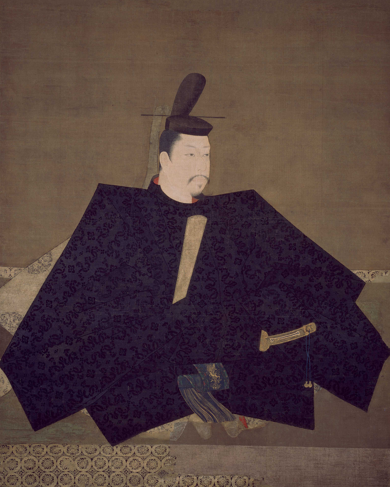
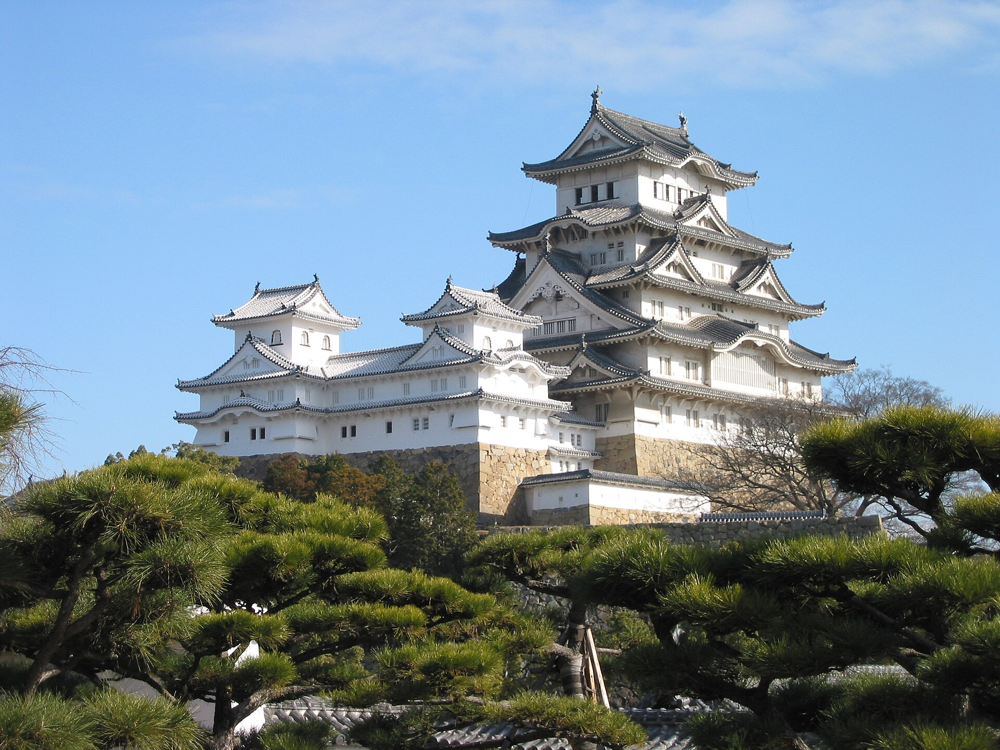

Überblick
Die Epoche Kamakura–Sengoku (ca. 1185–1600/1603) umfasst den Aufstieg und die Transformation der mittelalterlichen Kriegerordnung in Japan: von der ersten Militärregierung (bakufu) in Kamakura über das Ashikaga-Shōgunat in Kyōto und die lange Phase der „streitenden Provinzen“ (Sengoku) bis zur Neuordnung unter Oda Nobunaga, Toyotomi Hideyoshi und schließlich Tokugawa Ieyasu. Der Kaiserhof blieb symbolisch und rituell zentral; die reale Herrschaft über Land, Vasallen und Kriegsführung lag bei Samurai-Institutionen und regionalen Herren (daimyō).
Charakteristisch ist die Doppelstruktur von Hof und bakufu, die Ausbreitung des Zen-Buddhismus unter der Kriegerelite, die Abwehr der mongolischen Invasionsversuche 1274 und 1281 sowie, ab dem späten 15. Jahrhundert, die Fragmentierung der Zentralmacht nach dem Ōnin-Krieg. Im 16. Jahrhundert veränderten Feuerwaffen und der Kontakt mit Europäern (Nanban) Militär und Handel. Die Vereinigungskriege endeten mit der Schlacht von Sekigahara (1600) und der Ernennung Tokugawa Ieyasus zum Shōgun (1603), dem Beginn der Edo-Zeit.
Datierungen sind teils konventionsabhängig: Viele Darstellungen setzen den Kamakura-Beginn auf 1185 (Genpei-Entscheidung und faktische Grundlagen des bakufu), andere betonen die Shōgun-Ernennung Yoritomos 1192. Das Sengoku-Ende wird je nach Überblick mit Nobunagas Einzug in Kyōto (1568), dem Sturz des letzten Ashikaga-Shōgun (1573), Sekigahara (1600) oder 1603 angesetzt. Hier wird die Epoche bis zum Tokugawa-Aufstieg geführt. Gemeinsamer roter Faden ist die Dominanz der Kriegerklasse bei fortbestehendem Kaisertum, die wachsende Bedeutung regionaler Herrschaft und die allmähliche Ausbildung von Institutionen (Vasallenbindung, Burgen, Kataster, Standesregeln), die in der Edo-Zeit systematisiert wurden.
Akteure
- Minamoto no Yoritomo (1147–1199): Sieger des Genpei-Kriegs; gründete in Kamakura die erste dauerhafte Militärverwaltung und wurde 1192 zum Shōgun ernannt.
- Hōjō-Regenten (shikken): Nach Yoritomos Tod faktische Herrscher des Kamakura-bakufu; u. a. Hōjō Tokimasa, Yoshitoki, Yasutoki (rechtliche Stabilisierung, u. a. Goseibai shikimoku 1232) und Hōjō Tokimune (Abwehr der Mongolen).
- Kaiser Go-Daigo (1288–1339): Initiator der Kenmu-Restauration (1333–1336); versuchte die Rückkehr zu direkter kaiserlicher Herrschaft und scheiterte am Widerstand der Kriegerelite.
- Ashikaga Takauji (1305–1358): Zunächst Verbündeter Go-Daigos, dann Begründer des Ashikaga-bakufu; setzte einen rivalisierenden Kaiser in Kyōto ein und eröffnete die Nanbokuchō-Phase.
- Ashikaga Yoshimitsu (1358–1408): Konsolidierte das Muromachi-bakufu, beendete 1392 den Hofkonflikt und förderte Handel mit dem Ming-Reich sowie die Kitayama-Kultur (u. a. Kinkaku-ji).
- Hosokawa Katsumoto und Yamana Sōzen: Führende shugo-Häuser im Ōnin-Krieg (1467–1477); ihr Konflikt in Kyōto beschleunigte den Zerfall zentraler Kontrolle.
- Sengoku-Daimyō: Regionale Kriegsherren, die nach dem Zusammenbruch des Muromachi-Systems Territorien, Burgen und Vasallenverbände aufbauten (u. a. Takeda, Uesugi, Mōri, Imagawa, später Oda, Toyotomi, Tokugawa).
- Oda Nobunaga (1534–1582): Begann die militärische Wiedervereinigung; nutzte Feuerwaffen und wirtschaftliche Machtzentren; stürzte 1573 den letzten Ashikaga-Shōgun; starb 1582 beim Honnō-ji-Zwischenfall.
- Toyotomi Hideyoshi (1537–1598): Vollendete weitgehend die innere Vereinigung; Landvermessungen, Waffenkontrollen und Standesgrenzen; 1592 und 1597 Invasionen der Joseon-Halbinsel (Imjin-Krieg), die scheiterten und schwere Verheerungen hinterließen.
- Tokugawa Ieyasu (1543–1616): Sieger von Sekigahara (1600); 1603 Shōgun; legte die Grundlagen des Edo-bakufu.
- Europäische Händler und Missionare (Nanban): Ab den 1540er Jahren (traditionell Ankunft der Portugiesen auf Tanegashima 1543) Vermittler von Feuerwaffen, Handel und Christentum.
Was geschah
Kamakura

Nach dem Sieg der Minamoto über die Taira (Genpei-Krieg, Entscheidung 1185 bei Dan-no-ura) baute Yoritomo von Kamakura aus eine Militärverwaltung auf. Er band Vasallen (gokenin) durch Landrechte und Ämter und setzte in den Provinzen Militärstatthalter (shugo) sowie Landverwalter (jitō) ein. Der Kaiserhof in Kyōto blieb bestehen; die reale Kontrolle über Krieger und Güter verlagerte sich nach Osten. 1192 erhielt Yoritomo den Titel sei-i taishōgun. Damit war das Muster der Doppelherrschaft etabliert: Der Kaiser regierte formell, das bakufu herrschte.
Nach Yoritomos Tod (1199) übernahmen die Hōjō als Regenten (shikken) die faktische Macht; die Shōgune wurden zunehmend Figurinen, teils aus Fujiwara- oder kaiserlichen Linien. Hōjō Yasutoki institutionalisierte Recht und Verwaltung; der Goseibai shikimoku (1232) kodifizierte Kriegerrecht. 1221 scheiterte der Jōkyū-Aufstand des Exkaisers Go-Toba: Kamakura siegte und dehnte seinen Einfluss auf den Westen aus.
Die mongolischen Invasionsversuche unter Kublai Khan (Yuan) 1274 und 1281 bedrohten Kyūshū. Japanische Kräfte verteidigten die Küsten; Stürme vernichteten große Teile der Invasionsflotten und gingen in die Überlieferung als „Götterwinde“ (kamikaze) ein. Die Abwehr stärkte das Prestige der Hōjō unter Tokimune, belastete aber das Belohnungssystem: Es gab kaum erobertes Land zu verteilen, Vasallen verarmten, und die Autorität des bakufu erodierte. Im frühen 14. Jahrhundert wuchs die Unzufriedenheit; 1333 fiel Kamakura, und das erste bakufu endete. Religiös und kulturell förderte die Epoche neben etablierten Schulen den Zen (Rinzai, Sōtō) und volksnahe Richtungen (u. a. Amidismus, Nichiren). Bildhauerei und Portraitkunst tendierten zu größerer Realistik; Kyōto und Nara blieben Zentren der Hof- und Tempelkultur, während Kamakura die politische Achse bildete.
Muromachi / Ashikaga
Kaiser Go-Daigo versuchte 1333–1336 mit der Kenmu-Restauration, die direkte kaiserliche Herrschaft wiederherzustellen, und entfremdete dabei viele Krieger. Ashikaga Takauji, zunächst Unterstützer, wandte sich gegen Go-Daigo, setzte in Kyōto einen rivalisierenden Kaiser ein und gründete ein neues bakufu. Go-Daigo floh nach Yoshino (Südlicher Hof); der Ashikaga-Kaiser blieb in Kyōto (Nördlicher Hof). Die Nanbokuchō-Zeit (1336–1392) war von andauernden Konflikten geprägt, bis Ashikaga Yoshimitsu 1392 die Höfe wiedervereinigte.
Das Ashikaga-bakufu residierte ab Yoshimitsu im Muromachi-Viertel Kyōtos. Es kontrollierte die Provinzen weniger straff als Kamakura und stützte sich auf mächtige Militärstatthalter (shugo), die sich zu shugo-daimyō entwickelten. Yoshimitsu pflegte Diplomatie und Handel mit dem Ming-Reich und förderte eine raffinierte Kriegerkultur (Zen, Tuschemalerei, Tee, Nō). Wirtschaftlich entstanden intensivere Handels- und Stadtentwicklungen trotz politischer Schwäche. Die Muromachi-Kultur verband Kriegerethos mit Zen-Ästhetik: Tuschelandschaft, Trockenlandschaftsgärten, Teezeremonie und Nō-Theater (Kan’ami, Zeami) prägten das Bild der Epoche ebenso wie Yoshimitsus Goldener Pavillon und später Yoshimasas Silberner Pavillon (Higashiyama-Kultur).
Nach Yoshimitsu nahm die Autorität des Shōgunats ab. Interne Erbfolgestreitigkeiten und Rivalitäten der shugo-Häuser eskalierten im Ōnin-Krieg (1467–1477). Hosokawa Katsumoto und Yamana Sōzen führten gegnerische Lager; die Kämpfe verwüsteten weite Teile Kyōtos. Formell überlebte das Muromachi-bakufu bis 1573, faktisch war die Zentralmacht danach weitgehend zusammengebrochen.
Sengoku

Die Sengoku-Zeit („Zeit der streitenden Provinzen“) folgt auf den Ōnin-Krieg (häufiger Beginn 1467; alternative Markierungen u. a. Kyōtoku-Zwischenfall 1454 oder Meiō 1493). Regionale Herren (sengoku-daimyō) verdrängten oder absorbierten ältere shugo, bauten Burgen, steuerliche Verwaltung und stehende Kriegerverbände auf und führten Kriege um Territorium. Gesellschaftlich kam es zu Aufstiegen aus niederen Rängen (gekokujō, „das Untere besiegt das Obere“), Bauernaufständen und Tempelkriegen. Zugleich blühten Handel, Bergbau und Städte.
Ab den 1540er Jahren erreichten Portugiesen Japan (traditionell Tanegashima 1543). Feuerwaffen (teppō) veränderten Taktik und Burgenbau; christliche Mission und Nanban-Handel brachten neue Waren, Wissen und religiöse Spannungen. Daimyō wie die Ōtomo oder später Nobunaga nutzten diese Netzwerke. Christliche Gemeinden entstanden in Kyūshū und Handelshäfen; später kam es unter Hideyoshi zu ersten Verfolgungen. Die politische Landkarte blieb fragmentiert, bis mächtige Fürsten des zentralen Honshū die Initiative zur Wiedervereinigung ergriffen.
Vereinigung (Oda–Toyotomi, bis Tokugawa-Aufstieg)
Oda Nobunaga konsolidierte Owari und besiegte 1560 Imagawa Yoshimoto bei Okehazama. 1568 zog er im Namen Ashikaga Yoshiakis in Kyōto ein; 1573 vertrieb er den Shōgun und beendete das Muromachi-bakufu. Nobunaga zerstörte widerständige Tempelkomplexe (u. a. Enryaku-ji 1571), förderte Handel und setzte massenhaft Feuerwaffen ein (u. a. Nagashino 1575 gegen die Takeda). 1582 wurde er beim Honnō-ji-Zwischenfall von Akechi Mitsuhide angegriffen und kam ums Leben.
Toyotomi Hideyoshi, aus bescheidenen Verhältnissen aufgestiegen, rächte Nobunaga und setzte die Vereinigung fort: Er unterwarf Shikoku und Kyūshū, bezwang 1590 die Hōjō von Odawara und brachte damit weitgehend ganz Japan unter eine Oberherrschaft. Innenpolitisch betrieb er Katastererhebungen (taikō kenchi), entwaffnete Bauern (katanagari) und fixierte Standesgrenzen. Kulturell prägte die Momoyama-Zeit prächtige Burgen und Kunst.
1592 befahl Hideyoshi die Invasion Joseon-Koreas mit dem Ziel, über die Halbinsel gegen das Ming-Reich vorzugehen. Japanische Truppen erzielten anfangs schnelle Erfolge, gerieten aber durch koreanischen Widerstand (u. a. Seestreitkräfte unter Yi Sun-sin), Ming-Intervention, Nachschubprobleme und Guerilla in die Defensive. Nach gescheiterten Verhandlungen folgte 1597 ein zweiter Angriff. Der Krieg endete 1598 mit Hideyoshis Tod und dem Rückzug der japanischen Streitkräfte. Die Invasionen hinterließen auf der Halbinsel schwere Zerstörungen und belasteten Hideyoshis Regime; sie sind in der koreanischen Erinnerung als Imjin-Krieg zentral und in japanischen Überblicken oft als gescheiterte Überdehnung dargestellt.
Nach Hideyoshis Tod (1598) spaltete sich die Elite um seinen minderjährigen Erben Hideyori. Tokugawa Ieyasu siegte 1600 in der Schlacht von Sekigahara über die westliche Koalition. 1603 wurde er zum Shōgun ernannt und verlegte das Machtzentrum nach Edo (dem heutigen Tōkyō). Die Belagerung Ōsakas (1614–1615) beseitigte später die Toyotomi-Restmacht; damit war der Übergang zur Tokugawa-Friedensordnung der Edo-Zeit vollzogen.
Beginn
Der Beginn der Epoche liegt im Machtwechsel nach dem Genpei-Krieg. Mit der Vernichtung der Taira 1185 und Yoritomos Aufbau von shugo- und jitō-Strukturen in Kamakura entstand eine dauerhafte Kriegerregierung neben dem Kaiserhof. Die Shōgun-Ernennung 1192 besiegelte den institutionellen Anspruch. Anders als höfische Unruhen des 12. Jahrhunderts war das Kamakura-bakufu auf Vasallenbindung, Landrechte und Militärrecht gestützt. Damit beginnt das japanische Mittelalter im engeren Sinn der Samurai-Herrschaft: nicht als Ende des Kaisertums, sondern als Verlagerung der Exekutive auf eine östliche Militärzentrale. Die folgenden Jahrhunderte variierten dieses Muster (Kamakura, Muromachi, de facto Daimyō-Herrschaft, dann erneut ein starkes bakufu in Edo), ohne die grundlegende Dualität von Thron und Schwert aufzulösen.
Ende / Übergang
Das Ende der Epoche ist der Übergang von fragmentierter Sengoku-Herrschaft zur Tokugawa-Ordnung. Nobunaga und Hideyoshi hatten die militärische und administrative Wiedervereinigung weitgehend vollzogen; Hideyoshis Koreafeldzüge und der Nachfolgestreit schwächten jedoch das Toyotomi-Regime. Sekigahara (1600) entschied die Hegemonie zugunsten Ieyasus; die Shōgun-Ernennung 1603 begründet das Edo-bakufu. In den folgenden Jahrzehnten sicherten die Tokugawa Frieden durch sankin-kōtai (später systematisiert), Kontrolle der Daimyō und Abschirmungspolitik. Die Kriegerklasse blieb herrschend, nun aber unter einem stabilen Zentral-bakufu in Edo, während Kyōto rituell-kaiserlich blieb. Kultur und Religion der Muromachi- und Momoyama-Zeit (Zen, Tee, Burgenpracht, Nanban-Einflüsse) wirkten fort, wurden aber unter den Tokugawa stärker kontrolliert und kanalisiert. Damit geht Kamakura–Sengoku in die frühneuzeitliche Edo-Zeit über.
Quellen
- Encyclopaedia Britannica – „Minamoto Yoritomo“: https://www.britannica.com/biography/Minamoto-Yoritomo
- Encyclopaedia Britannica – „Hōjō Tokimune“: https://www.britannica.com/biography/Hojo-Tokimune
- Encyclopaedia Britannica – „Hōjō Yasutoki“: https://www.britannica.com/biography/Hojo-Yasutoki
- Encyclopaedia Britannica – „Japan: The Muromachi (or Ashikaga) period (1338–1573)“: https://www.britannica.com/place/Japan/The-Muromachi-or-Ashikaga-period-1338-1573
- Encyclopaedia Britannica – „Ōnin War“: https://www.britannica.com/event/Onin-War
- Encyclopaedia Britannica – „Oda Nobunaga“: https://www.britannica.com/biography/Oda-Nobunaga
- Encyclopaedia Britannica – „Toyotomi Hideyoshi“: https://www.britannica.com/biography/Toyotomi-Hideyoshi
- Encyclopaedia Britannica – „Tokugawa Ieyasu“: https://www.britannica.com/biography/Tokugawa-Ieyasu
- Encyclopaedia Britannica – „Battle of Sekigahara“: https://www.britannica.com/event/Battle-of-Sekigahara
- Metropolitan Museum of Art – „Kamakura and Nanbokucho Periods (1185–1392)“: https://www.metmuseum.org/essays/kamakura-and-nanbokucho-periods-1185-1392
- Metropolitan Museum of Art – „Muromachi Period (1392–1573)“: https://www.metmuseum.org/essays/muromachi-period-1392-1573
- Metropolitan Museum of Art, Heilbrunn Timeline – „Japan, 1400–1600 A.D.“: https://www.metmuseum.org/toah/ht/08/eaj
- Oxford Research Encyclopedia of Asian History – Nam-lin Hur, „Toyotomi Hideyoshi’s Invasion of the Chosŏn Kingdom, 1592–1598“: https://oxfordre.com/asianhistory/display/10.1093/acrefore/9780190277727.001.0001/acrefore-9780190277727-e-62
- Cambridge University Press – The Cambridge History of Japan, Vol. 3 (Medieval Japan), hrsg. Kozo Yamamura: https://www.cambridge.org/core/books/cambridge-history-of-japan/F42CA012B4A47D0B562C60363C8CE553
- Cambridge University Press – Serie The Cambridge History of Japan (Vol. 3 Medieval / Vol. 4 Early Modern): https://www.cambridge.org/gb/universitypress/subjects/history/series/cambridge-history-japan
- Asia for Educators (Columbia University) – „Japan: 1185–1868“ (timeline/overview): https://afe.easia.columbia.edu/timelines/japan_timeline.htm
- Nippon.com – „Oda Nobunaga and the Struggle to Unify Japan“: https://www.nippon.com/en/japan-topics/b06905/oda-nobunaga-and-the-struggle-to-unify-japan.html
- Nippon.com – „Toyotomi Hideyoshi’s Japan: Taking Control of the State“: https://www.nippon.com/en/japan-topics/b06906/